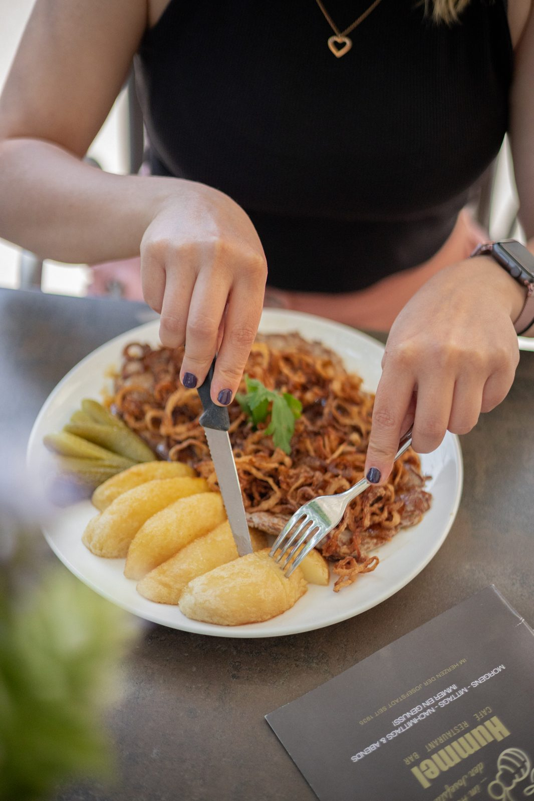

Im Herzen der Josefstadt · seit 1935
Ihr zweites Wohnzimmer in 1080 Wien.
Täglich von 8 bis 23 Uhr: Frühstück bis 14 Uhr, warme Küche bis 22 Uhr, Zeitungen aus aller Welt, Schach am Nebentisch, Fußball auf vier Fernsehern – und im Sommer die Terrasse in der Fußgängerzone.


Der Tag im Hummel
Vier Zeiten, ein Haus
Zwischen Frühstück und letzter Melange liegen fünfzehn Stunden. Wir haben sie so geordnet, dass Sie sofort sehen, wann was möglich ist.
Mittagsmenü 11 – 15 Uhr
Die Woche auf einen Blick
Wiener Küche, wie sie im Kaffeehaus gehört: jeden Tag ein anderer Klassiker. Die Buchstaben hinter den Gerichten sind die Allergenkennzeichnungen.
Warum hier kein PDF steht
Die bestehende Website verlinkt die Karte als PDF-Download. Das kostet auf dem Handy drei Fingerbewegungen, bei Google jede Auffindbarkeit und bei Gästen mit Screenreader den Zugang.
In dieser Vorschau steht jedes Gericht als Text auf der Seite – lesbar, durchsuchbar, verlinkbar.
Krautfleckerln mit Jägersalat A G O M L
Cremespinat mit Spiegelei und Petersilerdäpfeln oder geröstete Knödel mit Ei und Salat A C G M O L
Geselchter Schopfbraten mit Sauerkraut und Serviettenknödel A C G L O
Reisfleisch mit Gurkenrahmsalat A G M L O
Portionsbrathuhn mit Gemüsereis L
Seehechtfilet gebacken mit Erdäpfel- oder Mayonnaisesalat A C G M O D
Alt Wiener Kalbs-Salonbeuschel mit Serviettenknödel A C G M L O
Frühstück bis 14 Uhr, warme Küche von 11 bis 22 Uhr – auch zwischen den klassischen Essenszeiten.
Alle Speisen und Heißgetränke gibt es in recycelbarer Verpackung zum Mitnehmen; Lieferung und Abholung über MJAM, Wolt oder die Café-Hummel-App.
Für Ihr Wohlbefinden – seit 1935
Regionalität, Saisonalität, Gastfreundschaft
Das Café Hummel ist stolz darauf, sich das 1. Genuss-Café Wiens nennen zu dürfen: Regionalität, Saisonalität und die österreichische Gastfreundschaft im Sinne der GENUSS REGION ÖSTERREICH stehen im Leitbild an erster Stelle.
Wir beziehen unsere Produkte so weit als möglich aus österreichischen Betrieben:
- Gemüse, Obst, PilzeFirma Unfried, Krems
- Saisonales GemüseWiener Gemüse
- WurstwarenTrünkel
- FleischWiesbauer Gourmet
- SchinkenTradition seit 1860Thum
Der Hummel Service
- Tageszeitungen: in- und ausländische Zeitungen, Bundesländer-Blätter und Journale Ihrer Wahl
- Take Away: alle Speisen und Heißgetränke in recycelbarer Verpackung
- Free WiFi: schnelles Internet, kostenfrei
- Early Hummel: Montag bis Freitag von 8 bis 9 Uhr jeder Kaffee € 2,50
- Schach & Karten: Karten, Backgammon und Schach auf unseren Spieltischen
- Sonnenterrasse & Klimaanlage in der Josefstädter Fußgängerzone
- Veranstaltungen: die Bibliothek für private und firmenbezogene Feiern oder Pressekonferenzen
- Fußball live über sky TV und DAZN
- Spielecke mit schwungvollem Schaukelpferd
- Gutscheine von Sodexo und Edenred werden akzeptiert
Aktuelles
Was gerade im Hummel los ist


Die besten Spiele live erleben
Österreichische und Deutsche Bundesliga live sowie alle internationalen Fußballspiele – auf vier Fernsehern in HD über skyTV und DAZN.
SpritzerKühles BlondesGin Tonic
Feiern & Bibliothek
Ihr Fest zwischen Bücherregalen
Die Bibliothek steht für private und firmenbezogene Feiern zur Verfügung – vom runden Geburtstag über das Firmenessen bis zur Pressekonferenz. Und einmal im Jahr wird das ganze Haus zum Ballsaal.
Zahlungsmethoden
So können Sie bezahlen
Karte, kontaktlos, Apple Pay – dazu Essensgutscheine von Sodexo und Edenred.